Los dulces tradicionales de Yucatán forman parte de la identidad y la cultura de la región. Elaborados con ingredientes naturales y recetas transmitidas de generación en generación, conservan los sabores que han acompañado a las familias yucatecas durante muchos años.
Entre ellos destacan el dulce de nance, conocido por su sabor dulce y aroma característico; el dulce de ciruela, apreciado por su textura suave y su delicioso sabor; el dulce de camote, preparado de manera artesanal y muy popular en la gastronomía local; y el dulce de ciricote, una tradición que refleja la riqueza de los frutos de la región.
En esta página podrás conocer más sobre su historia, preparación e importancia cultural, así como el valor que tienen para preservar las tradiciones de Yucatán.
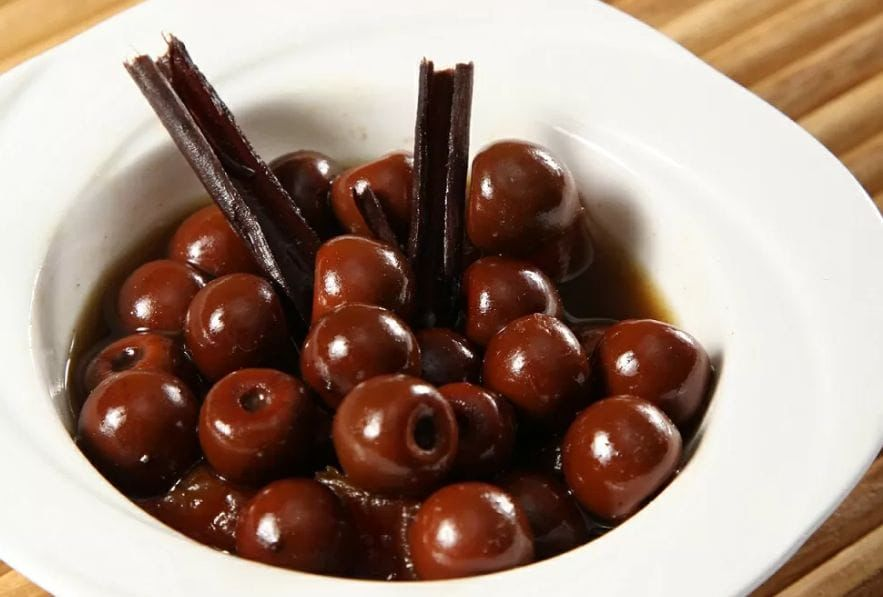
Maya: Ch'ujuk Chi'
El dulce de nance se prepara con frutos maduros cocidos con azúcar. Su sabor único y su elaboración artesanal forman parte de las tradiciones gastronómicas de Calcehtok.
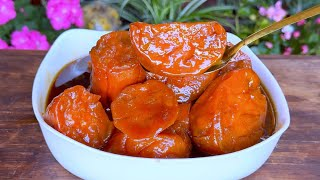
Maya: Ch'ujuk Is
El dulce de camote es una receta tradicional elaborada con camote y azúcar. Su sabor dulce y textura suave lo convierten en uno de los postres más representativos de la comunidad.
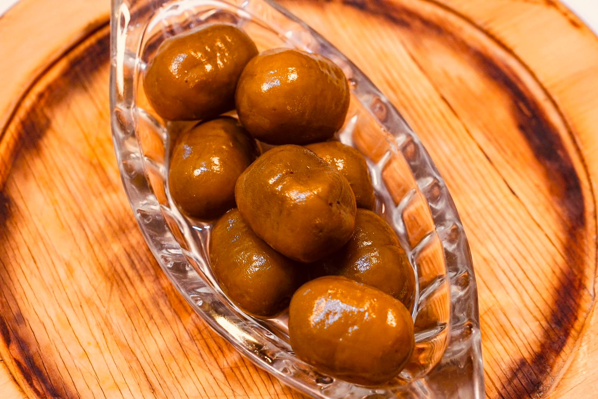
Maya: Ch'ujuk Abal
El dulce de ciruela destaca por su delicioso sabor y aroma natural. Se elabora con ciruelas cocidas cuidadosamente para conservar las características de esta fruta tradicional.
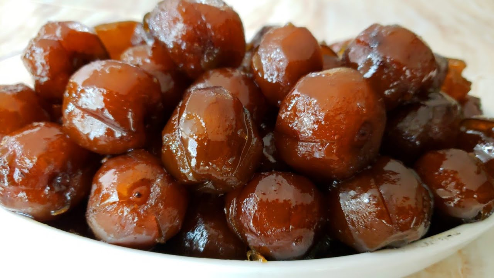
Maya: Ch'ujuk K'oopte
El dulce de ciricote es una preparación típica hecha con el fruto del ciricote y azúcar. Es una receta transmitida de generación en generación que forma parte del patrimonio cultural de la región.
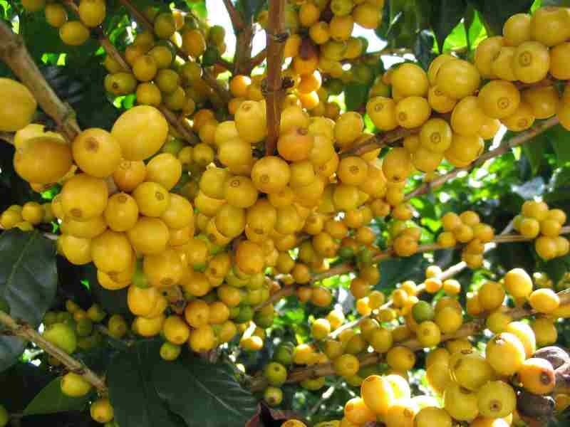
Siembra: Noviembre - Diciembre
Cosecha: Abril, Mayo, Junio y Julio
Tiempo en cosechar: 3-5 años
Método de siembra: El nance se siembra por semilla o mediante plantas de vivero. En Yucatán se recomienda sembrarlo al inicio de la temporada de lluvias. Primero se germinan las semillas y, cuando la planta alcanza entre 30 y 50 cm de altura, se trasplanta a un hoyo de aproximadamente 40 × 40 × 40 cm con tierra mezclada con abono orgánico.
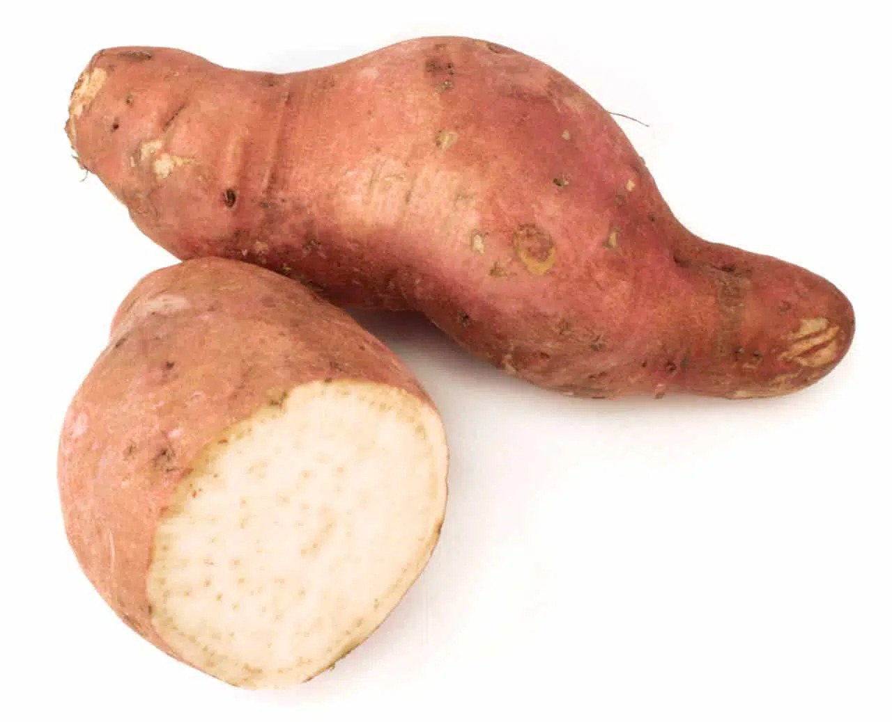
Siembra: Mayo - Junio
Cosecha: Septiembre, Octubre, Noviembre y Diciembre
Tiempo en cosechar: 3-6 meses
Método de siembra: El camote se siembra con trozos de tallo llamados esquejes. Estos se plantan a una profundidad de 10 a 15 cm y con una separación de 30 a 40 cm entre cada planta. Durante su crecimiento se debe regar regularmente, quitar las hierbas y cuidar la planta de plagas. Después de varios meses, cuando las hojas se ponen amarillas, el camote está listo para cosecharse.
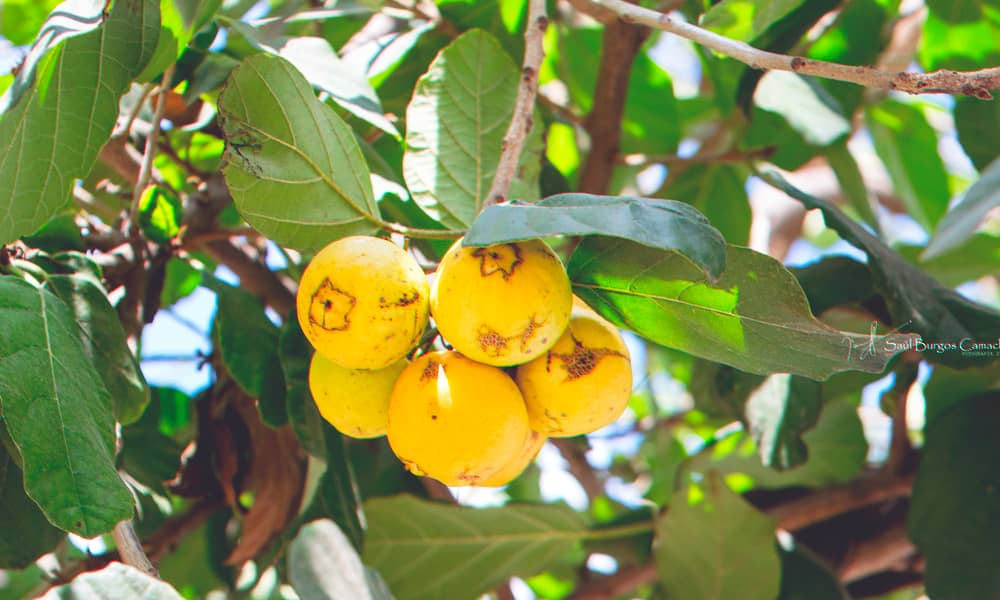
Siembra: Mayo, Junio y Julio
Cosecha: Agosto - Septiembre
Tiempo en cosechar: 4-6 años
Método de siembra: El ciricote se siembra por semilla. Las semillas se colocan primero en bolsas de vivero y, cuando la planta alcanza un tamaño adecuado, se trasplanta al terreno definitivo en un hoyo de aproximadamente 40 × 40 × 40 cm. Es una especie nativa de la Península de Yucatán.
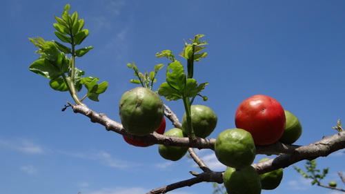
Siembra: Noviembre - Diciembre
Cosecha: Marzo, Abril, Mayo y Junio
Tiempo de cosecha: 2-4 años
Método de siembra: La ciruela se propaga principalmente por estacas o injertos. Se prepara un hoyo de aproximadamente 50 × 50 × 50 cm, se coloca la estaca o planta y se cubre con tierra abonada. Es un árbol que se adapta bien al clima de Yucatán y comienza a producir.
El camote ha desarrollado características que favorecen su supervivencia, como su capacidad para almacenar nutrientes en la raíz y resistir periodos de sequía. Estas características han permitido que la especie se adapte y continúe reproduciéndose en diferentes ambientes.
La ciruela yucateca posee rasgos que favorecen su reproducción, como frutos atractivos para animales que dispersan sus semillas. Estas características han contribuido a su permanencia en los ecosistemas locales.
El ciricote presenta características que favorecen su supervivencia, como su resistencia a las altas temperaturas y su capacidad para desarrollarse en suelos de la península. Estos rasgos han permitido la permanencia de la especie.
El nance posee características que favorecen su supervivencia y reproducción, como su capacidad para crecer en climas cálidos y producir abundantes frutos. Estos rasgos han permitido que la especie se mantenga ampliamente distribuida en la región.
La producción de camote presenta variabilidad en tamaño, color y sabor. Estas diferencias han permitido que algunas variedades se adapten mejor a las condiciones del suelo y clima de Yucatán, favoreciendo su cultivo y aprovechamiento en la elaboración de dulces tradicionales.
La variabilidad genética de la ciruela permite que algunos árboles produzcan frutos con diferentes tamaños y sabores. Estas características han facilitado su adaptación al clima cálido de Yucatán y su aprovechamiento para la elaboración de dulces.
Las diferentes características de sus frutos y semillas han favorecido su adaptación al entorno local. Esta variabilidad ha permitido que el ciricote continúe siendo una especie aprovechada por las comunidades para la elaboración de dulces tradicionales.
La variabilidad en los frutos del nance ha permitido que la especie se adapte a diferentes condiciones ambientales. Gracias a estas características, continúa siendo una planta importante para la elaboración de dulces tradicionales yucatecos.
Desde tiempos prehispánicos, el camote ha sido un alimento importante en la región. Con el paso del tiempo, su uso evolucionó hasta convertirse en ingrediente principal de dulces típicos que forman parte de la gastronomía yucateca actual.
La ciruela ha sido utilizada durante generaciones en la preparación de conservas y dulces artesanales. Su aprovechamiento ha pasado de ser una práctica familiar a formar parte del patrimonio gastronómico de la región.
El ciricote ha sido valorado desde hace muchos años por sus frutos comestibles. Su uso en la preparación de dulces representa la conservación de conocimientos y tradiciones transmitidas entre generaciones.
El nance forma parte de la cultura alimentaria de Yucatán desde hace generaciones. Su transformación en dulces y conservas demuestra la evolución de las prácticas culinarias locales y la preservación de las tradiciones regionales.
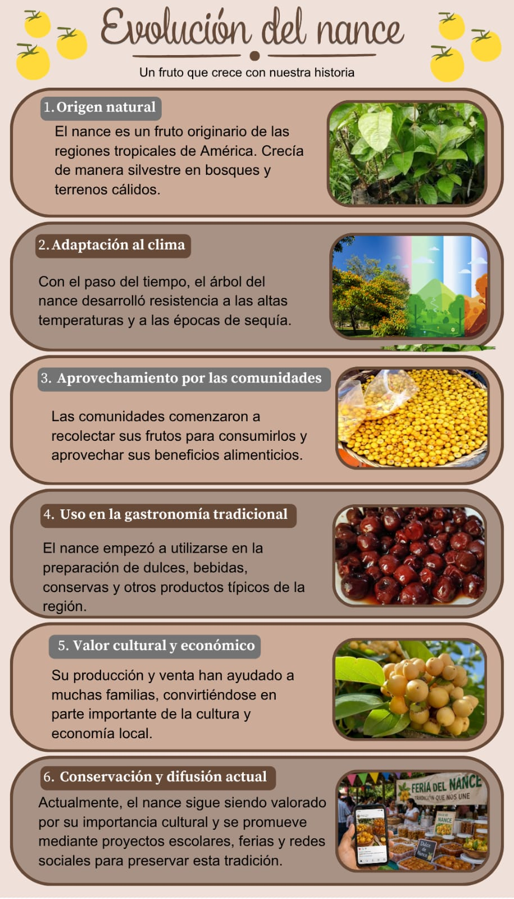
| X (Días) | Y = Leña | Coordenada |
|---|---|---|
| 1 | 8 | (1, 8) |
| 2 | 6 | (2, 6) |
| 3 | 5 | (3, 5) |
La tecnología nos ayudó a difundir los dulces tradicionales de nance, ciricote, ciruela y camote mediante redes sociales, páginas web y códigos QR. Gracias a estas herramientas, más personas pueden conocer su historia, ingredientes y forma de preparación. Además, reflexionamos sobre la importancia de utilizar empaques reciclables y de aprovechar ingredientes locales para reducir el impacto ambiental y apoyar la producción sostenible de nuestra comunidad.
Durante el proyecto trabajamos de manera colaborativa, respetando las opiniones e ideas de cada integrante. También valoramos la diversidad cultural de Calcehtok al investigar y compartir los conocimientos relacionados con la elaboración de los dulces tradicionales. Esta experiencia fortaleció la responsabilidad, el diálogo y el respeto hacia las tradiciones que forman parte de nuestra identidad.
El internet y las redes sociales han cambiado la forma en que las personas conocen los dulces tradicionales. Mediante los códigos QR, cualquier persona puede acceder fácilmente a información sobre los dulces de nance, ciricote, ciruela y camote, conocer su importancia cultural y aprender sobre su elaboración. Esto permite que las tradiciones locales lleguen a más personas, generando interés, valoración y oportunidades para fortalecer la economía de la comunidad.
Como estudiante de bachillerato, me siento orgullosa de contribuir a la conservación de los dulces tradicionales de Calcehtok. Este proyecto promueve el bien común al rescatar conocimientos transmitidos por generaciones y reconocer el trabajo de las familias que elaboran estos productos. También fomenta la inclusión, la igualdad de género y el respeto por las personas que mantienen vivas estas tradiciones, ayudando a preservar nuestro patrimonio cultural para las futuras generaciones.
Los dulces tradicionales de nance, ciricote, ciruela y camote forman parte del patrimonio cultural de Calcehtok. Su elaboración promueve el desarrollo sustentable mediante el uso responsable de ingredientes locales, el aprovechamiento adecuado del agua y la leña, y la reducción de desperdicios. Además, su producción fortalece la economía de las familias de la comunidad y contribuye a preservar las tradiciones para las futuras generaciones.
(Relación con los Dulces Tradicionales)
El consumo responsable consiste en comprar y consumir solo lo necesario, valorando la calidad, el origen de los productos y el trabajo de quienes los elaboran.
En el caso de los dulces tradicionales de nance, ciricote, ciruela y camote, el consumo responsable ayuda a apoyar a los productores de la comunidad y a conservar estas recetas tradicionales.
El consumismo es la compra excesiva de productos sin una necesidad real, lo que puede generar desperdicio y afectar las tradiciones locales.
El consumismo suele favorecer productos industrializados, lo que puede disminuir el interés por los dulces tradicionales y poner en riesgo su permanencia en la comunidad.
Durante la elaboración de los dulces se analizaron los recursos utilizados, como el agua y la leña empleados en el proceso de cocción. Esta información permitió identificar formas de aprovechar mejor los recursos disponibles, reduciendo el desperdicio sin afectar el sabor ni la calidad de los productos. El análisis también ayudó a comprender la importancia del cuidado del medio ambiente en las actividades tradicionales.
El nance es un fruto que crece en zonas cálidas de Yucatán, incluyendo comunidades como Calcehtok. Tradicionalmente se recolecta de árboles silvestres o cultivados durante su temporada de cosecha. Con este fruto se elaboran dulces, conservas y jarabes que forman parte de la gastronomía local. Su aprovechamiento ayuda a conservar las costumbres y conocimientos transmitidos de generación en generación.
El camote se cultiva en terrenos agrícolas de la región y es un ingrediente importante en la preparación de dulces tradicionales. Su producción depende de las características del suelo y del clima de Yucatán. La elaboración de dulces de camote representa una tradición que aprovecha los recursos locales y fortalece la identidad cultural de la comunidad.
La ciruela yucateca crece en huertos familiares y áreas rurales. Durante la temporada de cosecha, los frutos se recolectan para consumirlos frescos o para preparar dulces, mermeladas y conservas. Esta práctica forma parte de las tradiciones alimentarias de la región y contribuye a preservar el patrimonio cultural de Calcehtok.
El ciricote es un árbol nativo de la Península de Yucatán. Sus frutos son recolectados por las comunidades locales y utilizados en la elaboración de dulces artesanales. El aprovechamiento de este recurso natural refleja la relación entre la población y su entorno geográfico, además de promover la conservación de especies propias de la región.
La elaboración de dulces tradicionales de nance, camote, ciruela y ciricote está vinculada a las condiciones geográficas de Yucatán, como su clima cálido, sus suelos y la vegetación característica de la región. Estos factores permiten el crecimiento de los frutos que sirven como materia prima para la producción de dulces artesanales, contribuyendo a mantener las tradiciones y la identidad cultural de Calcehtok.
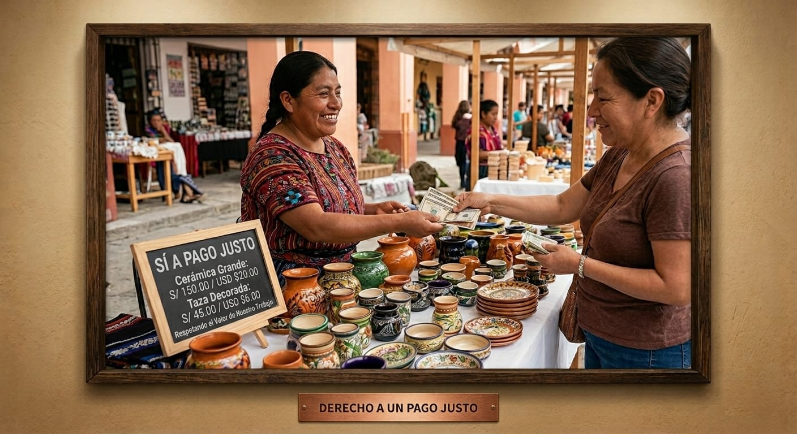
Derecho a recibir un pago justo por su trabajo.
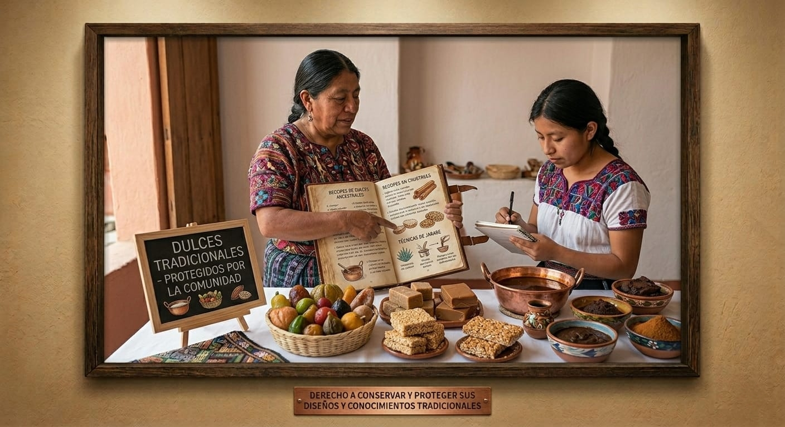
Derecho a conservar y proteger sus diseños y conocimientos tradicionales.
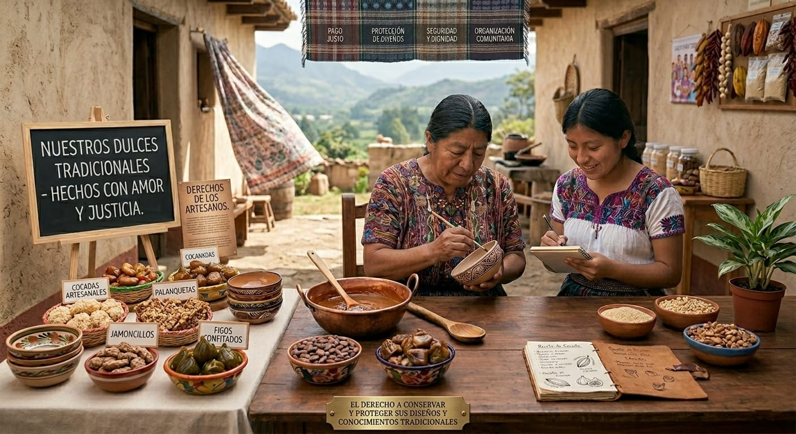
Derecho a vender sus artesanías sin discriminación.
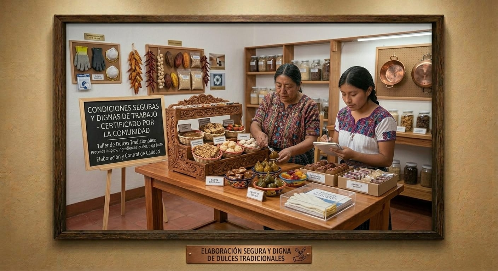
Derecho a trabajar en condiciones seguras y dignas.
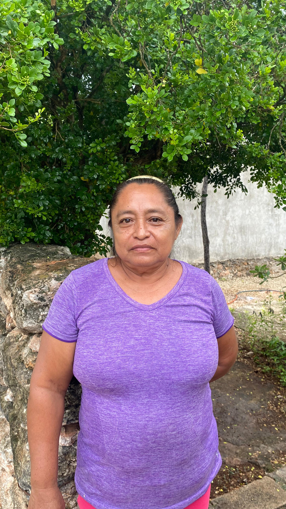
56 años | Originaria de Campeche
Llegó a vivir a Calcehtok mientras vendía sombreros, hamacas y dulces tradicionales. Aprendió a elaborar dulces observando a su madre y actualmente cuenta con más de 20 años de experiencia preparando dulces tradicionales.
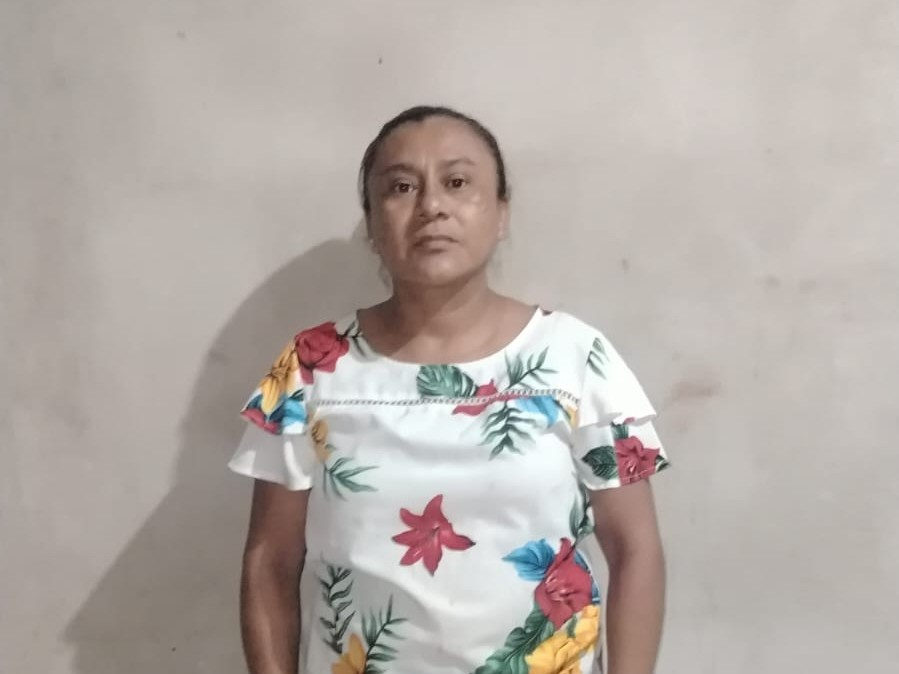
45 años | Originaria de Opichén | Reside en Calcehtok desde hace 29 años
Aprendió la elaboración del dulce de camote desde su infancia; a la edad de 13 años comenzó a colaborar con su abuela en su preparación. Inicialmente, la receta se destinaba exclusivamente al consumo familiar, pero con el tiempo se convirtió también en una fuente de sustento económico para su hogar, conservando así esta tradición.
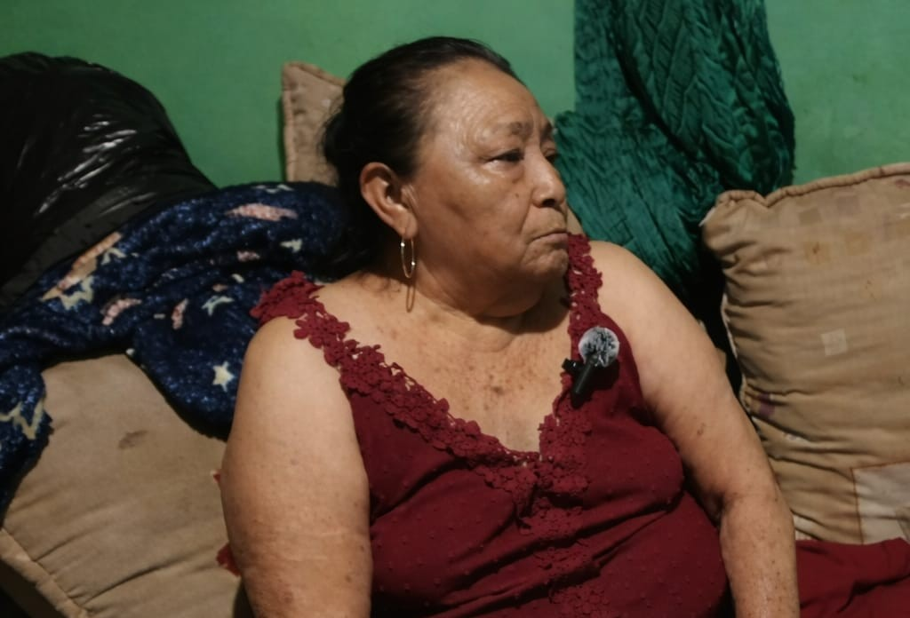
63 años | Originaria de Calcehtok
Aprendí a elaborar el dulce de ciruela a los 15 años gracias a mi abuelita paterna, quien me enseñó la receta tradicional de nuestra familia. Comencé a prepararlo para venderlo y, con los años, se convirtió en una tradición que conservo con orgullo. Para mí, este dulce representa nuestras raíces y la importancia de preservar nuestras costumbres.
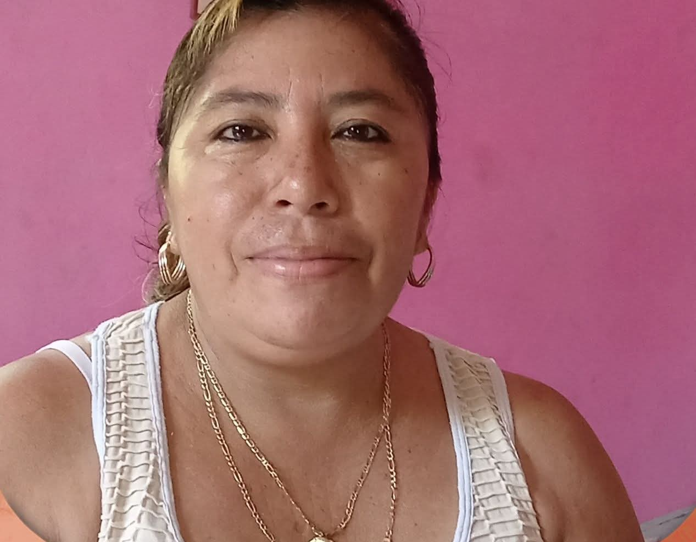
47 años | Originaria de Opichén
Aprendió a elaborar el dulce de ciricote hace 10 años gracias a su mamá, quien le enseñó como lo preparaba su abuela. Esta receta es algo que se elaboraba solo para consumo de su familia.
Salvaguardar nuestras tradiciones y nuestro patrimonio cultural es fundamental porque nos permite conservar la identidad, la historia y los conocimientos que han pasado de generación en generación. En el caso de los dulces tradicionales de nuestra comunidad, estos no son solo alimentos, sino expresiones culturales que reflejan nuestras costumbres, ingredientes locales, técnicas artesanales y formas de convivencia.
Al preservar la elaboración y el consumo de estos dulces, mantenemos vivas las enseñanzas de nuestros antepasados y fortalecemos el sentido de pertenencia entre los habitantes de la comunidad. Además, las tradiciones gastronómicas pueden impulsar el turismo, apoyar a los productores locales y generar oportunidades económicas.
En esta página podrás conocer más sobre su historia, preparación e importancia cultural, así como el valor que tienen para preservar las tradiciones de Yucatán. Cada dulce representa una conexión con las raíces mayas y el amor por los ingredientes naturales de la región.
Calcehtok es una comunidad que ha sabido conservar estas recetas, transmitiéndolas de abuelas a nietas, manteniendo vivo el sabor de la identidad yucateca.
Los artesanos tienen derecho a recibir una remuneración justa y equitativa por su trabajo, que reconozca el valor cultural y tradicional de sus productos, así como el tiempo y esfuerzo invertidos en cada pieza elaborada.
Este derecho es fundamental para garantizar que las tradiciones artesanales puedan mantenerse vivas y transmitirse a las nuevas generaciones.
Los artesanos tienen derecho a preservar, proteger y transmitir sus conocimientos tradicionales, técnicas ancestrales y diseños únicos que forman parte del patrimonio cultural de la comunidad.
Estos conocimientos representan la identidad y la historia de generaciones enteras que han dedicado su vida a mantener vivas estas tradiciones.
Los artesanos tienen derecho a comercializar sus productos en igualdad de condiciones, sin ser discriminados por su origen, género, edad o cualquier otra condición, garantizando el acceso a mercados justos.
La venta sin discriminación asegura que todos los artesanos puedan desarrollarse económicamente y mantener sus tradiciones como fuente de sustento.
Los artesanos tienen derecho a trabajar en entornos seguros y dignos, con las condiciones necesarias para proteger su salud e integridad física durante la elaboración de sus productos.
Un ambiente de trabajo seguro permite que los artesanos puedan desarrollar su labor con tranquilidad y bienestar, garantizando la calidad de sus productos.
María Guadalupe Dzul Uk tiene 56 años y es originaria de Campeche. Llegó a vivir a Calcehtok mientras vendía sombreros, hamacas y dulces tradicionales.
Aprendió a elaborar dulces observando a su madre y actualmente cuenta con más de 20 años de experiencia preparando dulces tradicionales.
Su especialidad son los dulces de nance y ciruela, que prepara con recetas heredadas de su familia. Hoy es un pilar en la comunidad, enseñando a las nuevas generaciones el valor de preservar estas tradiciones.
María Leticia Aldana Calan tiene 45 años de edad, es originaria de Opichén y reside en la localidad de Calcehtok desde hace 29 años.
Aprendió la elaboración del dulce de camote desde su infancia; a la edad de 13 años comenzó a colaborar con su abuela en su preparación.
Inicialmente, la receta se destinaba exclusivamente al consumo familiar, pero con el tiempo se convirtió también en una fuente de sustento económico para su hogar, conservando así esta tradición.
Aprendí a elaborar el dulce de ciruela a los 15 años gracias a mi abuelita paterna, quien me enseñó la receta tradicional de nuestra familia.
Comencé a prepararlo para venderlo y, con los años, se convirtió en una tradición que conservo con orgullo. Para mí, este dulce representa nuestras raíces y la importancia de preservar nuestras costumbres.
Hoy, con 63 años, sigue elaborando dulces y compartiendo su conocimiento con las nuevas generaciones.
Miriam Guadalupe Tec Estrella tiene 47 años y es originaria de Opichén.
Aprendió a elaborar el dulce de ciricote hace 10 años gracias a su mamá, quien le enseñó como lo preparaba su abuela.
Esta receta es algo que se elaboraba solo para consumo de su familia, pero hoy la comparte con la comunidad, manteniendo viva una tradición familiar.